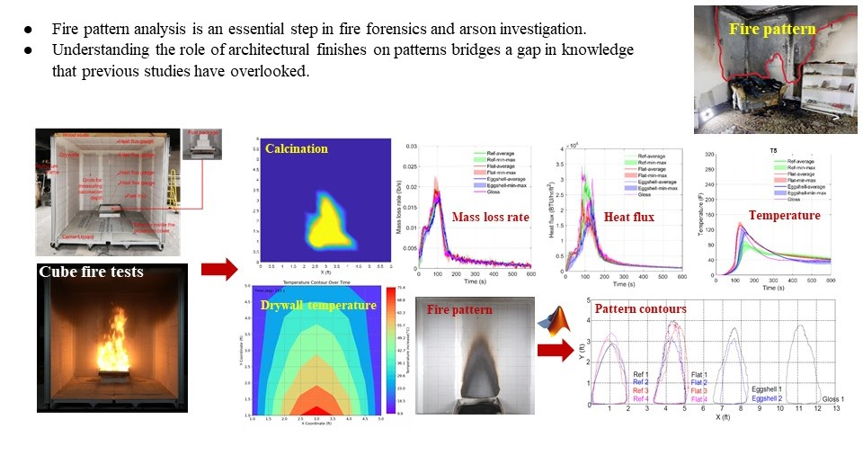

Home
Team
Research
Publications
News
Investigating the Impacts of Architectural Finishes on Fire Patterns
Investigating the Impacts of Architectural Finishes on Fire Patterns
People
Shuna Ni (PI)
Stanislav I. Stoliarov (Co-PI)
Maria Binte Mannan
Nicolas Lei
Project Description
paragraph about the project
Project Poster

Relevant Links
UMD Fire Protection Engineering Department
UMD FPE Graduate Program
UMD FPE Newsletter
Other Website Sections
Team
Research
Publications
Contact Information
301-405-5841
shunani@umd.edu
3104 J.M. Patterson Building